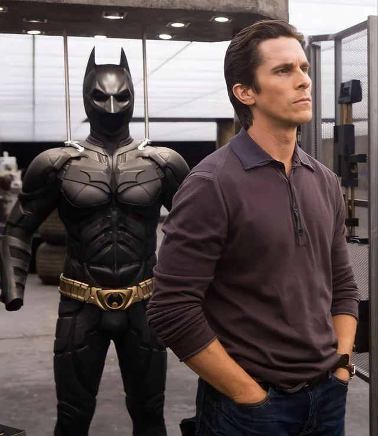
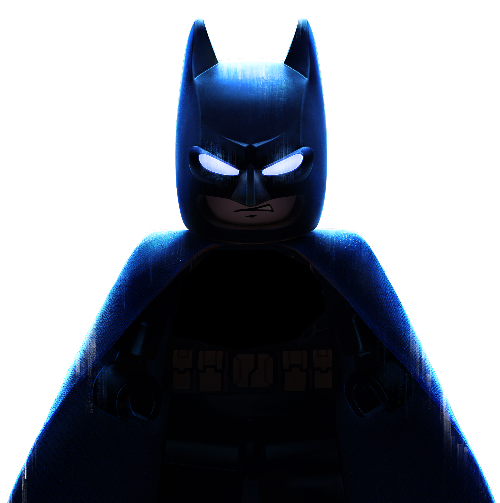
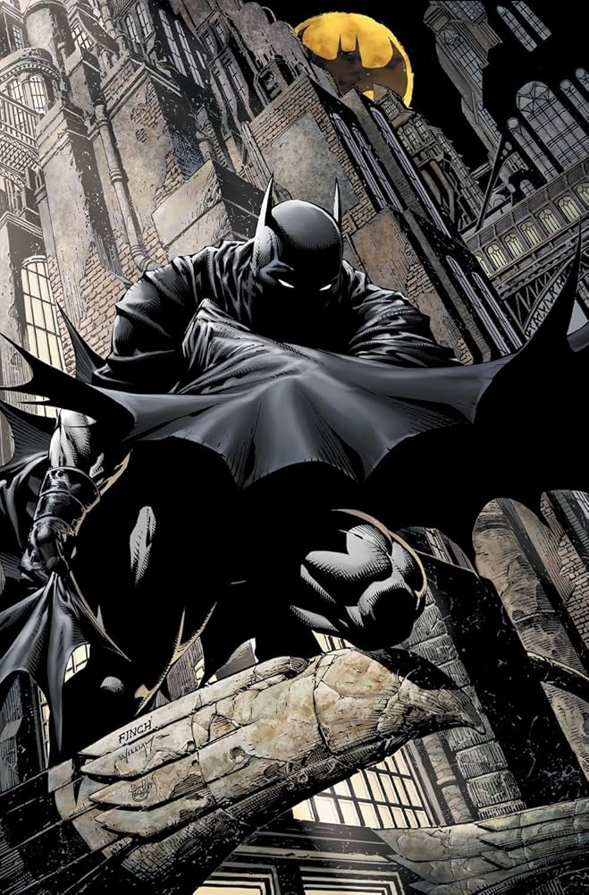

Quem é o Batman?
Batman (Bruce Wayne) é um personagem da DC comics e atua como justiceiro (sem ninguém ter pedido isso a ele) de Gothan. Ele não tem superpoderes: sua força está em treinamento, tecnologia e riqueza (muita riqueza).
Em várias histórias, Gothan representa Problemas sociais: desigualdade, corrupção e violência urbana. Alguns quadrinhos usam o batman como forma de crítica social , mostrando como falhas nas instituições, interesses ecônomicos e autoritarismo afetam principalmente quem tem menos direitos e oportunidaddes.
Galeria


